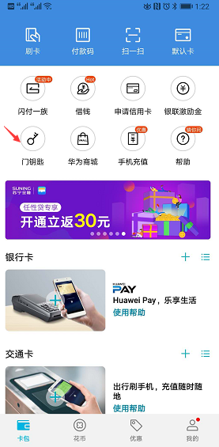
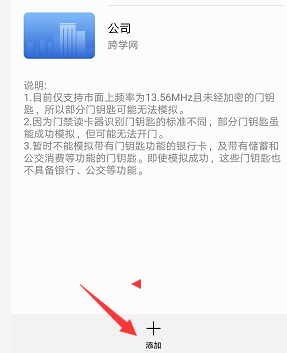

<div style="text-align:center">
<h2 style="color:red">手机替代门禁卡-华为手机实验</h2>
<br/>
<h3>1、打开华为钱包应用，如下图</h3>
<h3></h3>
<h3>2、点添加钥匙功能，如下图：</h3>
<h3></h3>
<h3 >3、然后点击添加按钮。</strong></h3>
<h3></h3>
 </p>
</div>
 